Hello I am Jak
I am a Computer Science Master's Degree student in University of Turin, Italy. I am now on the way of completing my graduate thesis on an experiment aimed at investigating whether and to what extent LLMs can be employed to analyze the language of both healthy and cognitively impaired elderly people.
Bio
My name is Giacomo Grandi and I was born in Florence, Italy on february 27th, 1997.
I have always been an enthusiast traveler, I have visited 39 countries around the world, and still counting ðŸ¤
I have also always been passionate about all kind of sports, I've tried so many. My current favorites are cycling, climbing, skiing, and kayaking.
Education
Studied at the Scientific High School A. Gramsci in Florence, Italy (2011-2016).
Spent two weeks in Scotland, studying for the Young Learners Courses at the Edinburgh School of English (july 2014).
Got my Bachelor's Degree in Computer Science at the University of Florence, Italy (2016-2020).
I have been an Erasmus student for the spring semester at the University of Helsinki, Finland (2022).
I am currently completing my Master's studies in Artificial Intelligence at the University of Turin (2020-now).
Download my CV 